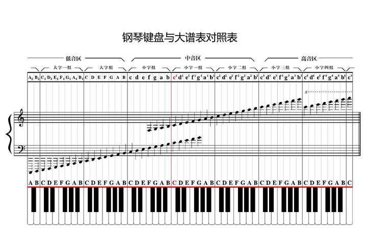

边听边定位
声音有频率的高低变化，音符可以帮你找到这些变化，而乐谱帮你把它翻译成可视化的记录。
🎶
音符是表示音高和时值的符号，是乐谱的基本组成部分。
01
音名与唱名
先记住这些：用字母表示音高，当你开口的时候用唱名来唱。C、D、E、F、G、A、B再回到C，这样就形成了一个完整的音阶。
点击上方的音名与唱名卡片，试听对应的音高，帮助你建立音高与音名的对应关系。
科学视角下，音高是由声波的频率决定的，频率越高，音高越高；频率越低，音高越低。明朝的皇族世子朱载堉系统性地研究了音律，后来由传教士传入欧洲，并形成了完整的十二平均律理论。以440Hz频率的音高为基准，按照一定的规律，音高被依次划分为十二个半音，每个音高之间的频率比值大致相等，这就是十二平均律的原理。
中央 C3 到高音 C4
点击音符头试听对应音高，你需要将这些与上方的音名和唱名对应起来，还记得之前的节奏音轨吗？这些就像是节奏的乐器行一样，只不过被换成一个一个音高。
02
钢琴键盘
后人发展出了更加系统的乐音布局，并借此发明了众多乐器，钢琴是典型的代表。它将音高按照规律清晰排列，演奏者可以直观地找到所需的音高。
看下面这个键盘，找 C 最快的方法：观察两颗相邻的黑键，左边紧邻的白键就是 C，位于小字一组的C3（不同人使用的标准可能不同）就是我们俗称的中央C。钢琴有88键，这里取出了歌曲中用得较多的C3-B4部分，练习区有一个更加完整的键盘供你练习。
点击白键试听。黄色键标出两个 C，帮你快速建立坐标。可以参照下面这张图找到更全面的分组和对应关系。

我们这里取出的是小字一组和小字二组的部分键位，便于初学者练习和识别。上图中小字一组的C即是我们所称的C3，本教程暂时取用这个标准。
练习
听音找键
先播放一个音，再选你听到的音名。你可以使用上方的钢琴键盘用作对照，这个是更加简单的练习方式。练习熟了之后，再尝试不借助键盘进行听音识别。
点击播放开始。